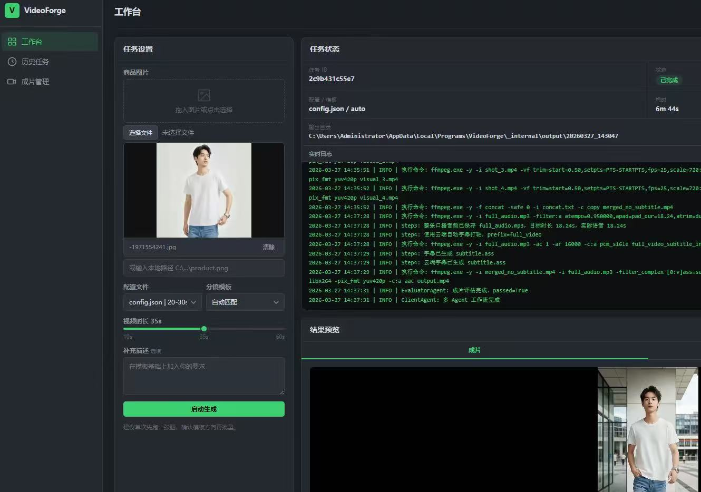
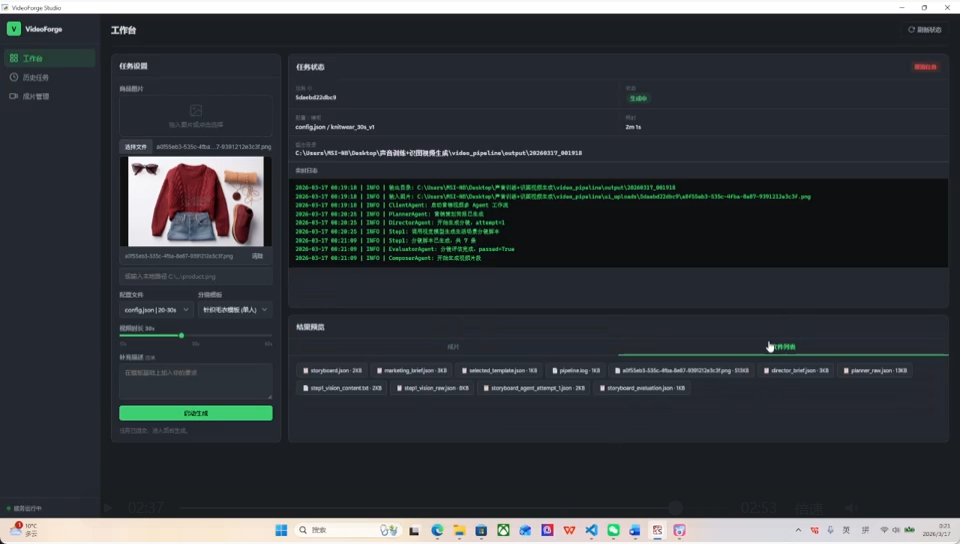
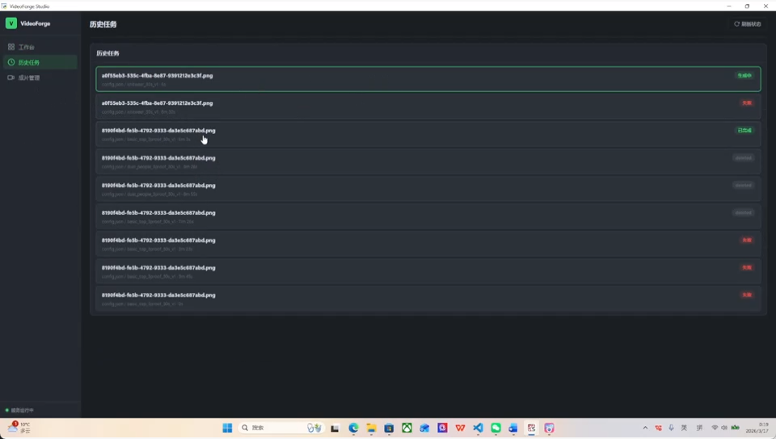
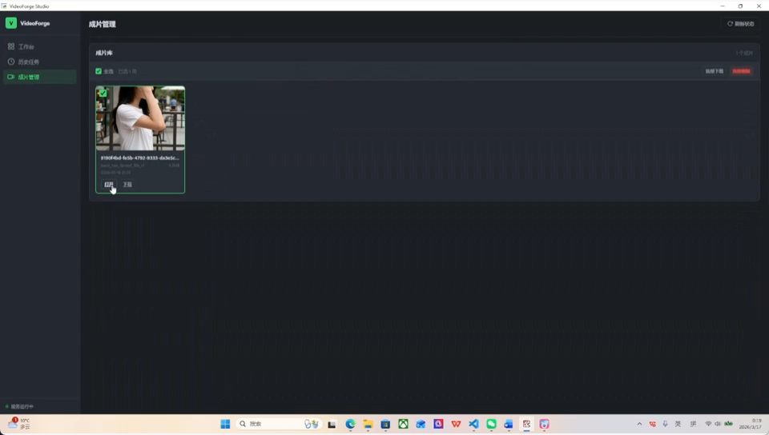

Automated short-drama production for Chinese short-video platforms. Seedance and Kling APIs for generation, a Feishu-integrated review and dispatch middleware, and a social-auto-upload layer for multi-platform publishing at scale.
面向中国短视频平台的短剧自动化生产。Seedance 和 Kling API 负责生成,飞书集成的审核 + 派发中间件,以及自动发布层支持多平台规模化投放。
The loop: script drafts feed a generation queue, Feishu bots route approvals to human reviewers, and approved clips flow into a publishing agent that handles platform-specific packaging, scheduling, and posting. A single operator can run what used to need a small team.
循环:剧本初稿进生成队列,飞书机器人把审核卡片推给人类审核,通过后进入发布 agent 处理平台适配、排期和投放。一个人就能跑过去需要小团队做的量。



